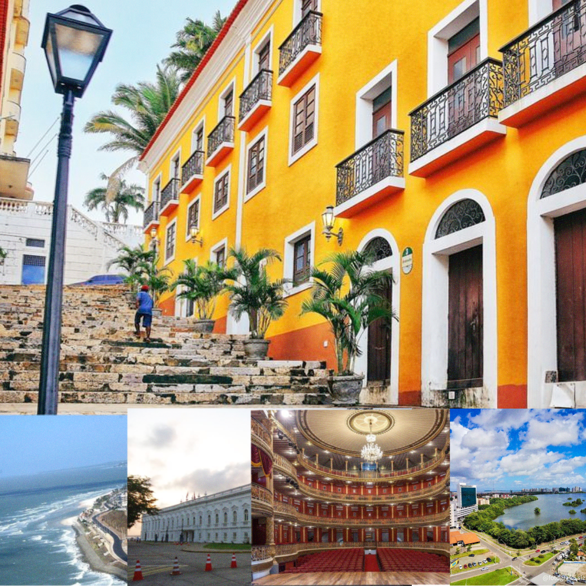
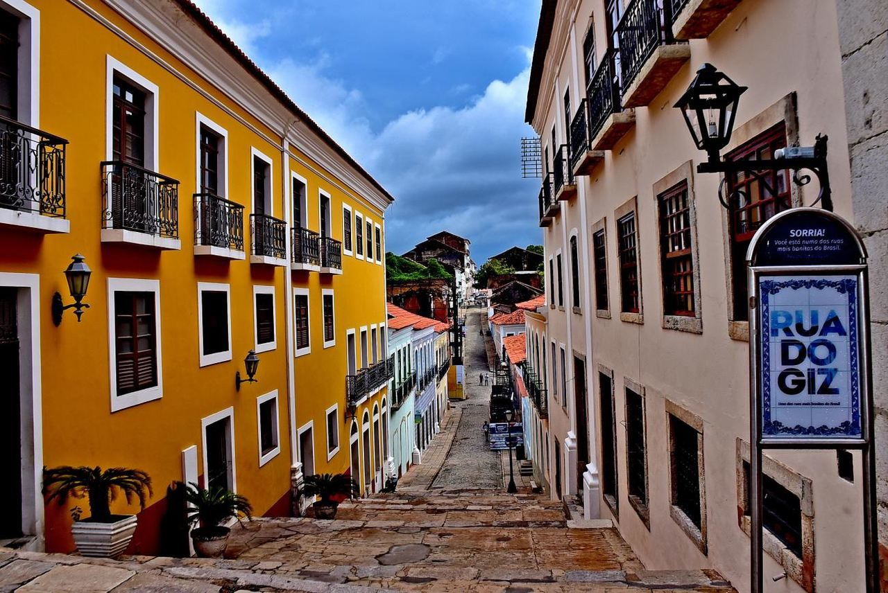
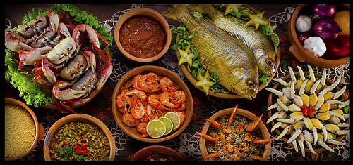
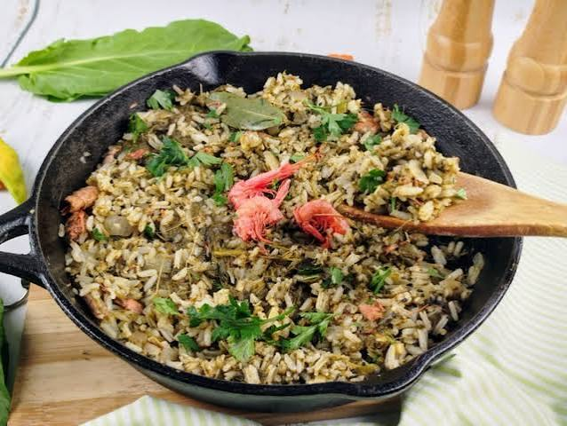
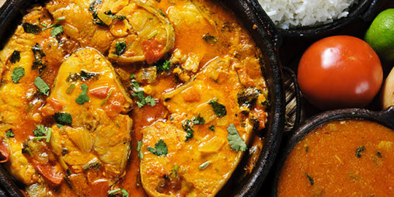
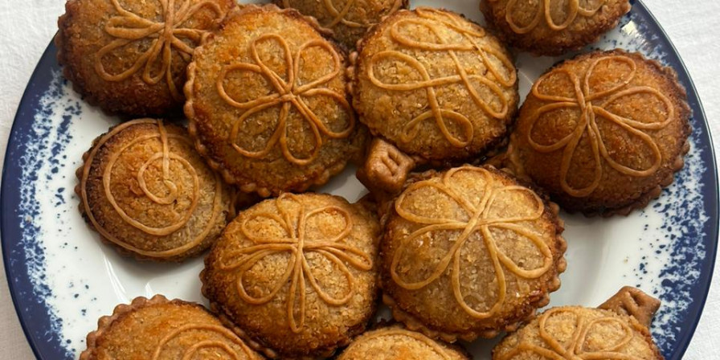
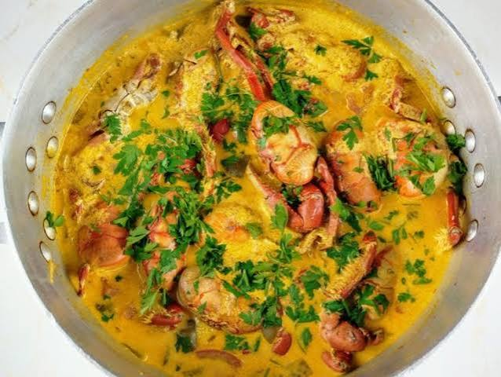

Aqui você ira conhecer mais sobre a está ilha tão bela e cheia de vida
Pontos Turísticos

Aqui você encontrará informações sobre os principais pontos turísticos de São Luís.

O Centro Histórico de São Luís é um importante patrimônio cultural do Brasil, conhecido por seus casarões antigos, ruas de pedra e fachadas com azulejos portugueses. Fundada em 1612, a cidade preserva construções dos períodos colonial e imperial. Em 1997, o Centro Histórico foi reconhecido como Patrimônio Mundial pela UNESCO, devido à sua importância histórica e arquitetônica.
A Igreja da Sé, também conhecida como Catedral de Nossa Senhora da Vitória, é um dos monumentos históricos mais importantes de São Luís. Sua construção inicial começou em 1619 e foi inaugurada em 1622. Localizada no Centro Histórico, destaca-se por sua arquitetura religiosa e pelo belo altar-mor com detalhes dourados, considerado uma importante obra da arte barroca brasileira.
O Teatro Arthur Azevedo, localizado no Centro Histórico de São Luís, foi inaugurado em 1º de junho de 1817, inicialmente com o nome de Teatro União. É um dos teatros mais antigos do Brasil e se destaca por sua arquitetura neoclássica. Na década de 1920, recebeu o nome atual em homenagem ao dramaturgo maranhense Arthur Azevedo. Atualmente, é um importante espaço de apresentações artísticas e valorização da cultura maranhense.
Comidas Típicas

Aqui você encontrará informações sobre as principais comidas típicas de São Luís.
Arroz com Cuxa

Ingredientes
• Vinagreira. 2 maços de folhas de vinagreira frescas e higienizadas, sem os talos mais grossos.
• Arroz. 2 xícaras (chá) de arroz branco cru ou 4 xícaras de arroz já cozido.
• Camarão. 100g a 150g de camarão seco descascado, previamente demolhado em água para retirar o excesso de sal.
• Gergelim. 2 colheres (sopa) de gergelim branco torrado e levemente triturado.
• Temperos base. 1 cebola média picada, 3 dentes de alho amassados, 1 tomate picado sem sementes e pimentinha-de-cheiro a gosto.
• Gordura e finalização. 3 colheres (sopa) de azeite de coco babaçu (ou azeite de oliva comum), cheiro-verde picado e sal a gosto.
• Líquido. Cerca de 4 xícaras (chá) de água fervente, caso utilize o arroz cru.
Modo de Preparo
1. Cozinhe a vinagreira. Coloque as folhas de vinagreira em uma panela com água fervente por cerca de 5 minutos até murcharem e mudarem de cor.
2. Pique as folhas. Escorra toda a água, passe as folhas para uma tábua e pique-as bem fininhas ou bata com as costas da faca até formar uma pasta.
3. Prepare o refogado. Aqueça o azeite de coco babaçu em uma panela grande e refogue o alho, a cebola, o tomate e a pimentinha-de-cheiro até dourarem levemente.
4. Incorpore o camarão e o cuxá. Adicione o camarão seco escorrido e refogue por 2 minutos. Junte a vinagreira picada e o gergelim torrado, mexendo bem para unir os sabores.
5. Cozinhe o arroz. Acrescente o arroz cru lavado à mistura, ajuste o sal e despeje a água fervente. Deixe cozinhar em fogo médio com a panela semitampada até a água secar por completo.
6. Finalize e sirva. Desligue o fogo, solte os grãos com um garfo e misture o cheiro-verde picado.
Escabeche

Ingredientes
• Peixe. 1 kg de peixe firme cortado em postas (como pescada amarela, robalo, serra ou cavala).
• Tempero do peixe. Suco de 1 limão, 3 dentes de alho amassados, sal e pimenta-do-reino a gosto.
• Para empanar e fritar. Farinha de trigo (ou farinha de mandioca fina) para empanar e óleo vegetal suficiente para fritar.
• Base do molho. 2 cebolas médias cortadas em rodelas, 3 tomates maduros picados ou em rodelas e 1 pimentão (verde, vermelho ou amarelo) em rodelas.
• Líquidos e gorduras. 200 ml de leite de coco, 1 colher (sopa) de azeite de dendê e 2 colheres (sopa) de azeite de oliva (ou óleo).
• Temperos do molho. 2 dentes de alho picados, 1 colher (sopa) de extrato de tomate ou colorau, pimentinha-de-cheiro a gosto, cheiro-verde picado e sal.
Modo de Preparo
1. Tempere o peixe. Lave as postas, tempere com limão, alho amassado, sal e pimenta-do-reino. Deixe descansar por cerca de 15 a 20 minutos para pegar sabor.
2. Frite as postas. Passe cada posta levemente na farinha de trigo, retirando o excesso. Frite em óleo quente até dourarem bem dos dois lados e reserve sobre papel-toalha.
3. Prepare o molho. Em uma panela larga, aqueça o azeite de oliva e o azeite de dendê. Refogue o alho picado, a cebola, o pimentão e o tomate até começarem a murchar.
4. Encorpe o caldo. Adicione o extrato de tomate (ou colorau), a pimentinha-de-cheiro, o leite de coco e ajuste o sal. Deixe cozinhar em fogo baixo por cerca de 8 a 10 minutos até formar um molho bem saboroso e encorpado.
5. Monte e finalize. Disponha as postas de peixe fritas em uma travessa funda ou na própria panela larga e despeje o molho quente por cima. Finalize com bastante cheiro-verde picado e deixe descansar por 5 minutos antes de servir para o peixe absorver o caldo.
Doce de Espécie

Ingredientes
Massa
• Farinha de trigo. 2 xícaras (chá).
• Gordura. 5 colheres (sopa) de óleo (ou 3 colheres de sopa de manteiga).
• Sal. 1/2 colher (chá).
• Líquido. 1/2 xícara (chá) de água em temperatura ambiente.
Recheio
• Coco. 3 xícaras (chá) de coco fresco ralado grosso (cerca de 270g).
• Açúcar. 2 xícaras (chá) de açúcar cristal ou refinado.
• Líquido. 1 xícara (chá) de água.
• Especiarias e brilho. 10 unidades de cravo-da-índia e 1 colher (sopa) de manteiga ou margarina.
Modo de Preparo
1. Prepare o recheio. Em uma panela, misture o coco ralado, o açúcar, a água, os cravos e a manteiga. Leve ao fogo médio para alto, mexendo sempre até a calda engrossar e o doce ficar bem cremoso, sem secar totalmente. Reserve até esfriar e retire os cravos antes de montar.
2. Faça a massa. Em uma tigela, misture a farinha de trigo, o óleo, o sal e vá adicionando a água aos poucos até formar uma massa lisa, firme e homogênea.
3. Abra e corte os discos. Polvilhe farinha em uma bancada, abra a massa com um rolo até ficar bem fininha e corte em discos redondos (com cerca de 8 a 10 cm de diâmetro). Guarde as aparas da massa para decorar.
4. Recheie e decore. Coloque os discos em uma assadeira untada e enfarinhada. Disponha uma colher (sopa) generosa do recheio de coco no centro de cada disco, deixando as bordas livres. Corte tirinhas bem finas com a sobra da massa e cruze sobre o recheio, formando um pequeno laço ou trama característica.
5. Asse. Leve ao forno preaquecido a 200 °C por cerca de 20 minutos, ou até que a base da massa e as tirinhas fiquem levemente douradas e crocantes.
Caranguejada

Ingredientes
• Caranguejos. 12 caranguejos médios ou grandes bem limpos e escovados.
• Para a limpeza. Suco de 2 limões e 2 colheres (sopa) de vinagre.
• Temperos base. 2 cebolas grandes picadas, 4 tomates maduros picados, 1 pimentão verde picado, 1 pimentão vermelho picado e 4 dentes de alho amassados.
• Ervas e pimenta. 1 maço de cheiro-verde picado (coentro e cebolinha) e pimentinha-de-cheiro a gosto.
• Líquidos e gorduras. 400 ml de leite de coco, 3 colheres (sopa) de azeite de oliva (ou óleo), 1 colher (sopa) de azeite de dendê (opcional) e cerca de 500 ml de água quente.
• Temperos secos. 1 colher (sopa) de colorau, sal e pimenta-do-reino a gosto.
Modo de Preparo
1. Higienize os caranguejos. Lave cada caranguejo em água corrente utilizando uma escova limpa para remover toda a lama do casco e das patas. Deixe de molho por 10 minutos em uma bacia com água, suco de limão e vinagre, depois enxágue bem.
2. Prepare o refogado. Em uma panela bem grande e larga, aqueça o azeite de oliva (e o dendê, se usar) e refogue o alho e a cebola até murcharem.
3. Forme a base do caldo. Acrescente os tomates, os pimentões, a pimentinha-de-cheiro, o colorau, o sal e a pimenta-do-reino. Refogue por cerca de 5 minutos até os legumes soltarem líquido.
4. Cozinhe os caranguejos. Arrume os caranguejos na panela, despeje o leite de coco e adicione água quente suficiente para cobrir cerca de metade da altura deles.
5. Finalize o cozimento. Tampe a panela e deixe cozinhar em fogo médio por aproximadamente 20 a 25 minutos, virando os caranguejos na metade do tempo para pegarem bem o tempero. Desligue o fogo e salpique bastante cheiro-verde picado por cima.
Torta de Camarão Seco
Ingredientes
Recheio
• Camarão. 500g de camarão seco descascado, previamente dessalgado.
• Batatas. 3 batatas médias cozidas e cortadas em cubos pequenos ou levemente amassadas.
• Temperos base. 2 cebolas médias picadas, 3 dentes de alho amassados, 2 tomates maduros sem sementes picados e 1 pimentão verde ou vermelho picado.
• Gorduras e líquidos. 2 colheres (sopa) de azeite de oliva (ou óleo), 1 colher (sopa) de azeite de dendê (opcional) e 100 ml de leite de coco.
• Finalização. Cheiro-verde picado (coentro e cebolinha), pimentinha-de-cheiro e pimenta-do-reino a gosto.
Cobertura (Massa Areada)
• Ovos. 6 ovos grandes (claras e gemas separadas).
• Farinha. 2 colheres (sopa) de farinha de trigo peneirada.
• Sal. 1 pitada de sal (apenas se o recheio estiver suave).
• Para decorar (opcional). Rodelas de tomate, cebola, pimentão e azeitonas sem caroço.
Modo de Preparo
1. Dessalgue o camarão. Deixe o camarão seco de molho em água fria por cerca de 30 minutos, trocando a água duas vezes, ou ferva rapidamente por 3 minutos e escorra bem.
2. Prepare o refogado. Em uma panela, aqueça o azeite de oliva e refogue o alho, a cebola, o pimentão e o tomate até murcharem. Acrescente o camarão seco e refogue por 3 minutos.
3. Incorpore as batatas e o leite de coco. Junte as batatas cozidas, o leite de coco, o azeite de dendê e a pimentinha-de-cheiro. Cozinhe em fogo baixo por cerca de 5 minutos até o recheio ficar úmido, porém sem excesso de caldo líquido. Finalize com cheiro-verde, desligue e deixe amornar.
4. Bata a massa de ovos. Na batedeira, bata as claras em neve até ficarem bem firmes. Sem parar de bater, adicione as gemas uma a uma e, por último, incorpore a farinha de trigo delicadamente com uma espátula ou fouet.
5. Monte a torta. Unte um refratário médio com manteiga e farinha de trigo. Espalhe uma fina camada da massa batida no fundo, distribua todo o recheio de camarão por cima e cubra com o restante dos ovos batidos.
6. Decore e asse. Decore a superfície com rodelas finas de cebola, tomate, pimentão e azeitonas. Leve ao forno preaquecido a 180 °C por cerca de 25 a 30 minutos, até a superfície ficar bem dourada e firme.
Cultura
Aqui você encontrará informações sobre a cultura de São Luís.